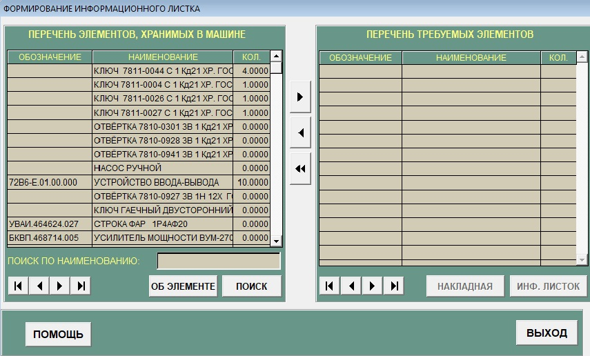
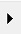
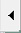
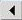
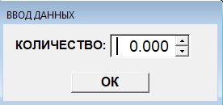
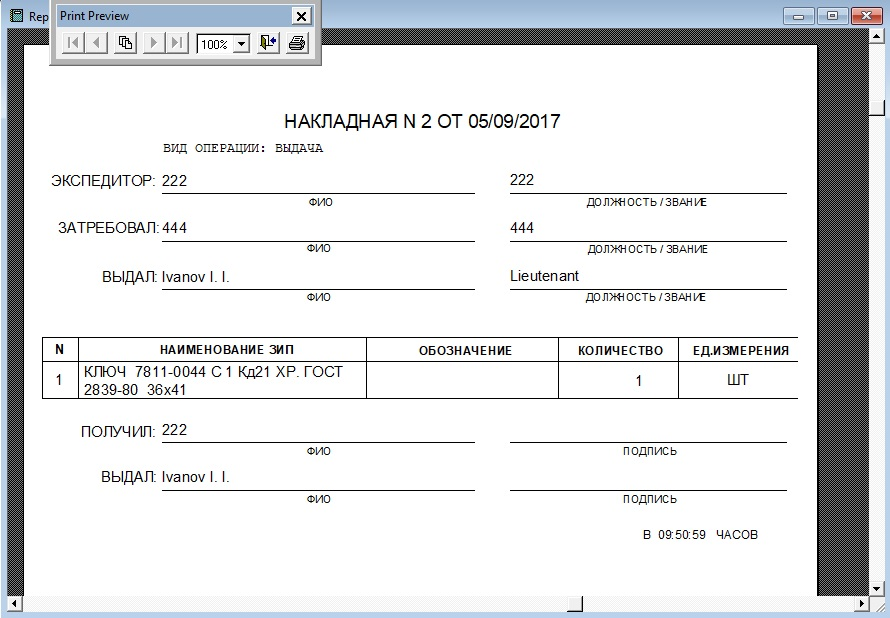
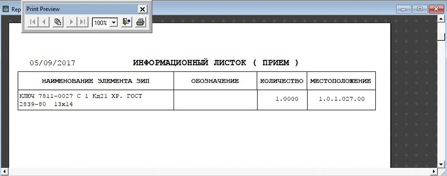

Подсистема "Выдача"
В конец документа
В подсистеме "Выдача" предоставлена возможность учета выданных элементов ЗИП. Внешний вид окна представлен на рисунке 1.

Рисунок 1 - Подсистема выдача
Назначение клавиш:
- "Об элементе" - просмотр полной информации об элементе.
-
"Поиск" - поиск необходимого элемента по атрибутам. При нажатии на этой кнопки станет активным окно поиска
смотри п.3.12 (Подсистема "Поиск").
- "Накладная" - вывод накладной по выданным элементам(становится доступной после выдачи элементов).
- "Инф.листок" - вывод отчета по требуемым элементам(становится доступной после выдачи элементов).
- "Начать регистрацию" - включение функции регистрации штрих-кодов с помощью терминала или вручную.
- "Помощь" - позволяет открыть справку.
- "Выход" - осуществляет выход из окна подсистемы "Выдача".
Клавиши управления перечнем требуемых элементов:
-  - копировать активный элемент в перечень требуемых элементов.
-  - удалить активный элемент из перечня требуемых элементов.
- - удалить все элементы из перечня требуемых элементов.
-
 - для перехода к последней надписи.
- для перехода к последней надписи.
-  - для перехода к предыдущей надписи.
-
 - для перехода к следующей надписи.
- для перехода к следующей надписи.
- - для перехода к первой надписи.
Назначение полей следующее:
- "Обозначение" - Обозначение элемента.
- "Наименование" - Имя элемента.
- "Кол" - Количество полученных элементов.
Для выдачи элементов в системе АСПУ необходимо выполнить следующие действия:
-
Из перечня элементов, хранимых в машине, выбрать и занести в перечень требуемых необходимые элементы ЗИП с помощью клавиши управления,
смотри рисунок 2.

Рисунок 2 - Количество затребовших элементов
- Нажать клавишу "Начать регистрацию" для включения функции регистрация штрих-кодов с помощью терминала.
-
Курсор (мигающая вертикальная линия) должен находится в появившемся окне ввода, где будут отражаться считываемые терминалом штрих-коды,
иначе коды элементов не будут зарегистрированы.
-
Считывание терминалом:
- Подвести терминал к штрих-коду.
Ввод с клавиатуры:
- Ввести штрих код в поле.
- Нажать на клавиатуре клавишу "Enter"
Если количество элементов одного типа больше одного, вводить через терминал или вручную надо на каждый элемент.
-
Нажать клавишу "Сохранить" для записи информации по выданным элементам в систему АСПУ, при этом надо будет ввести данные:
-
Становится доступной клавиша "Накладная" для вывода на печать документа о выданных элементах, смотри рисунок 5.

Рисунок 5 - Накладная
-
Для вывода на печать спсика выданных элементов, нужно нажать клавишу "Инф.листок", смотри рисунок 6.

Рисунок 6 - Инф.листок
- При необходимости повтора операции выдачи, необходимо выйти в главную форму, и войти в подсистему "Выдача" повторно.